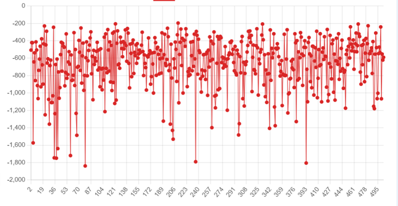
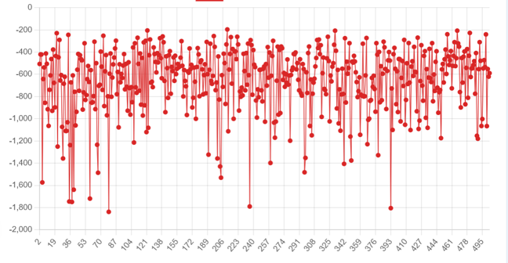

Sample of the reward convergence plot over episode count.
Milo Boyd
Liam Calder
A Deep Q-Network (DQN) implementation that learns to play Tetris using reinforcement learning with advanced board state analysis and sophisticated reward engineering.
This project implements a DQN agent that learns to play Tetris through reinforcement learning, using a multi-channel observation space and carefully crafted reward functions. The AI analyzes board states through multiple features including holes, bumpiness, height factors, and Tetris setup detection to make strategic decisions about piece placement.
The implementation uses a 3-channel observation system that captures the current board state, active piece position, and next piece information, allowing the AI to plan ahead and make more informed decisions.
The video below explains our approach and demonstrates the AI in action.
Sample of the reward convergence plot over episode count.
Our project faced several critical limitations that prevented the AI from achieving acceptable performance:
The fundamental issue was that the AI never showed meaningful skill improvement despite extensive parameter tuning and architectural adjustments. This lack of progress created a negative feedback loop - without positive results to build upon, it became increasingly difficult to maintain development momentum and iterate effectively on the design.
DQN Model Limitations: Our choice of a simple DQN architecture may have been fundamentally inadequate for the complexity of Tetris. The model demonstrated only rudimentary ability to manipulate game pieces but lacked the sophisticated decision-making required to play at or beyond human level. The poor training results suggest that either our implementation was flawed or the basic DQN approach was insufficient for this task.
CNN Architecture: A critical insight from our experience is that a Convolutional Neural Network (CNN) would likely be more suitable for processing the spatial 3-channel board representation. CNNs excel at extracting spatial features and patterns, which could help the model better understand board configurations without requiring an excessively large input space. This approach could significantly improve both training efficiency and the model's ability to recognize important game patterns.
While our results were disappointing, the project provided valuable learning experiences. Key takeaways include:
Future work should focus on implementing a CNN-based architecture for state processing, exploring more advanced reinforcement learning algorithms, and developing more sophisticated reward shaping techniques to guide the learning process more effectively.
@article{park2021nerfies,
author = {Park, Keunhong and Sinha, Utkarsh and Barron, Jonathan T. and Bouaziz, Sofien and Goldman, Dan B and Seitz, Steven M. and Martin-Brualla, Ricardo},
title = {Nerfies: Deformable Neural Radiance Fields},
journal = {ICCV},
year = {2021},
}